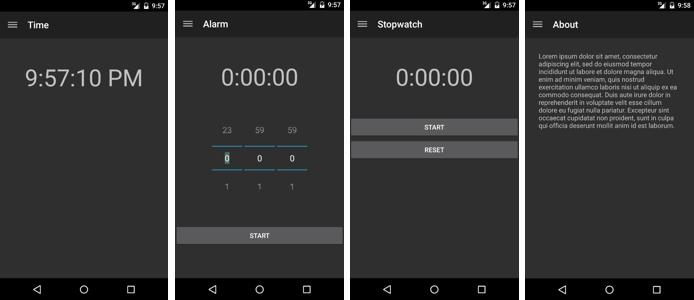

Duration
20 minutes
Lab goals
The goal of this exercise is to add Drawer Navigation to a partially-written app. You will be working on a Clock app that provides the four pages shown below: current time, stopwatch, alarm, and about. The individual pages of the app are supplied as is the menu; your job is to build the main navigation structure. Notice the "hamburger" button at the top-left of the app; adding that to the UI and connecting it to a navigation drawer are the key things you will be coding.
Required assets
The provided Resources folder for this exercise contains a subfolder named Start that contains the app you will use. There is also a Completed folder with a solution you can use to check your work. Please make sure you have these folders before you begin.
Challenge
You can use the high-level description here to work through the lab on your own. Alternatively, you can use the instructions below if you would like step-by-step guidance.
- Open the Clock solution from the Lab.Start folder.
- Open MainActivity.cs. All your work will be done in this file.
-
Use
FindViewByIdto retrieve a reference to theDrawerLayoutdefined in the XML and store it in a field. -
Create an instance of
ActionBarDrawerToggleand store a reference to it in a field. -
Register the
ActionBarDrawerToggleas a listener on theDrawerLayout. -
Call
SetDisplayHomeAsUpEnabledon the Activity's ActionBar. -
Override
OnPostCreateand call theActionBarDrawerToggle'sSyncStatemethod. - Close the navigation drawer when the user clicks on a menu item.
-
Override the Activity's
OnOptionsItemSelectedmethod. Call theActionBarDrawerToggle's version of the same method. If it returnstrue, then you should returntrue; otherwise call your base-class implementation and use its return value. - Run the app to test your work.
Steps
Below are the step-by-step instructions to implement the exercise.
Examine the starter code
The supplied code implements the entire Clock app except for the Drawer Navigation part. Before you begin coding, the steps here will lead you through an examination of a few key parts of the provided code.
- Open the Clock solution from the Lab.Start folder.
- Open Resources/layout/Main.axml in source-code view.
-
Notice the
DrawerLayoutused as the root layout. It has anidso you can access it from code-behind. -
The first child is a
FrameLayout. This will display the app's main content. Each page of the app is implemented as a Fragment. The code-behind will load a different Fragment into thisFrameLayoutwhenever the user clicks on an entry in the navigation menu. Notice that this has anidto enable access from code-behind. -
The second child is a
ListViewthat implements the navigation menu. It has anidto allow code-behind access. Notice the setting forlayout_gravity. This is required. TheDrawerLayoutsearches through its children looking for one that has horizontal gravity defined and puts that view inside its sliding-drawer menu. - Open MainActivity.cs.
-
Locate and study all the code that deals with the
ListView. There is some initialization inOnCreate. There is more code in theOnMenuItemClickhandler that swaps the Fragment that is shown to the user. None of this code is specific to Drawer Navigation; it is standardListViewand Fragment code.
Implement Drawer Navigation
Your task is to create a button to control the navigation drawer. It is not quite as easy as it sounds because the button and drawer interact with each other in a few different ways. There is also one case they don't handle: when the user selects a menu item, you have to close the navigation drawer.
- Open MainActivity.cs. All your work will be done in this file.
-
In
OnCreate, useFindViewByIdto retrieve a reference to theDrawerLayoutdefined in the XML and store it in a field. -
In
OnCreate, create an instance ofActionBarDrawerToggleand store a reference to it in a field. The accessibility strings you will need to pass to the constructor have been defined for you with ids ofResource.String.DrawerOpenDescriptionandResource.String.DrawerCloseDescription. The completed code is given below if you need it, hidden behind a button. -
In
OnCreate, register theActionBarDrawerToggleas a listener on theDrawerLayout. The method you need to call is namedSetDrawerListener -
In
OnCreate, callSetDisplayHomeAsUpEnabledon the Activity's ActionBar. The completed code is given below if you need it, hidden behind a button. -
Override the Activity's
OnPostCreatemethod and call theSyncStatemethod on yourActionBarDrawerToggle. The completed code is given below if you need it, hidden behind a button. -
In
OnMenuItemClick, add a call to theCloseDrawermethod on theDrawerLayout. You will need to pass theListViewas the parameter. -
Override the Activity's
OnOptionsItemSelectedmethod. You need to call theActionBarDrawerToggle's version of the same method (i.e.OnOptionsItemSelected) and pass theIMenuItemparameter to it. If it returnstrue, then you should returntrueas well. If it returnsfalse, then you should call yourbaseimplementation and return whatever value it returns to you. The completed method implementation is given below if you need it, hidden behind a button. - Run the app to test your work. Use the button to open/close the navigation drawer. Use swipe gestures to open/close the navigation drawer. Select a menu item and verify the drawer closes.
Summary
In this exercise, you used Drawer Navigation to implement a flyout menu. This pattern can be complex to code since it has several components that all need to interact with each other. However, it can be worth the effort when you have an app with a large number of pages: Drawer Navigation gives you the room for a large menu with links to all your pages while taking up minimal UI real estate when the menu is closed.
In your opinion, was Drawer Navigation appropriate for this app? Would it have been better to use Tabs? There is no right or wrong answer here, it is just something to think about.